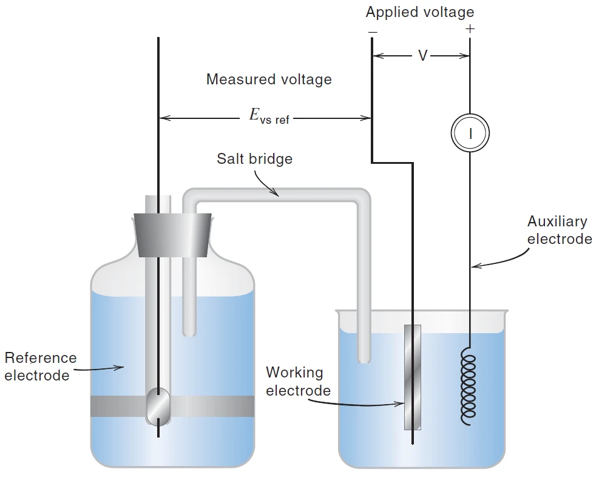
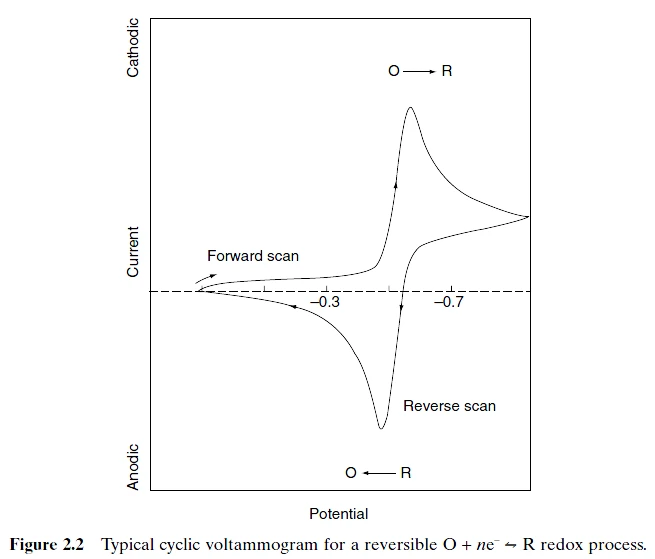
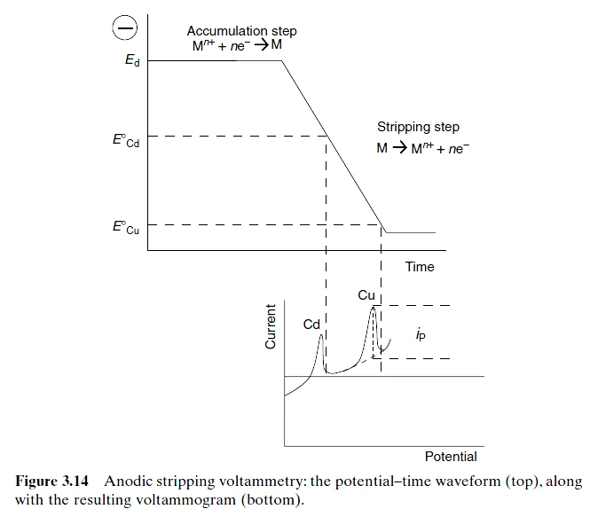

CHAPTER 12 · VOLTAMMETRY & AMPEROMETRY
伏安法与电流分析
按课件顺序整理原理、公式条件、复算例题与易混概念。
12.1 · VOLTAMMETRIC CELL
伏安图与三电极：控制电位、读取电流
伏安法（voltammetry）按规定程序改变工作电极电位，记录电流随电位的变化。电位轴帮助判断物种及反应过程，电流轴在给定条件下用于定量。它主动驱动少量电解，区别于近零电流电位法；电极附近发生反应，而总体样品的消耗通常很小。
三电极体系包括工作电极 WE、参比电极 RE 和对电极 CE。恒电位仪控制 WE 相对 RE 的电位，实际电流主要在 WE 与 CE 间流动。RE 支路电流极小，从而减少参比极化，但 WE 表面到 RE 感测位置之间仍可能有未补偿溶液电阻，出现 iR 降。
电位必须注明参比。课件以 SCE 相对氢电极＋0.242 V 换算：Evs.SHE=Evs.SCE＋0.242 V。测量时不要把工作电极相对参比的电位，与整个电解池两端所需电压混为一谈。

来源：12_Voltammetry.pptx，slide 2–9。
12.2 · MASS TRANSPORT
扩散、迁移、对流与支持电解质
电流持续流动需要反应物到达电极。扩散由浓度或化学势梯度驱动；迁移由电场驱动；对流由搅拌、旋转或流动产生。高浓度惰性支持电解质承担大部分溶液导电，使待测离子的迁移贡献减小，也降低溶液电阻。课件提出浓度至少约为待测物的一百倍，是常见的条件设计参考。
J 是单位面积、单位时间的物质的量通量，D 为扩散系数；Fick 第一定律给出通量，第二定律描述浓度剖面随时间的演变。Nernst–Planck 方程再把电场迁移和对流项加入。是否可以忽略其中某项，取决于支持电解质、流动和几何条件。
支持电解质还可控制 pH 或络合环境。金属离子被络合稳定时，其还原通常需要更负电位，但应逐一分析两种氧化态的稳定程度。课件 cyanide 应译为氰化物，不能与 chloride（氯化物）混同。
来源：12_Voltammetry.pptx，slide 10–15、27–28。
12.3 · DIFFUSION-LIMITED CURRENT
从浓度梯度得到扩散极限电流
以平面电极、固定扩散层厚度 δ 为简化模型，线性浓度梯度把 Fick 通量转为电流的绝对值：
A 是电极面积，cb、cs 是主体与表面浓度。电位足够驱动反应后，表面反应物接近耗尽，cs≈0，再增加驱动力也难以超过物质输送速率，所以出现极限电流。固定 A、D、δ 后，il 与主体浓度成正比。
稳定搅拌或旋转能近似维持固定传质层，常得到 S 形波。静止溶液中的宏观平面电极则形成不断扩展的扩散层；电位阶跃后理想 Cottrell 电流按 t 的负二分之一次幂衰减。线性扫描时，电位驱动与扩散层增长共同塑造峰形，不能笼统称为指数衰减。
来源：12_Voltammetry.pptx，slide 16–22。
12.4 · HALF-WAVE POTENTIAL
半波电位：把表面浓度换成电流
设可逆电对 Ox＋ne−⇌Red，主体初始只有 Ox，稳态传质系数分别为 KO 与 KR。由电流守恒可得表面浓度 cO,s=(il−i) 与 KO 的比值，cR,s=i 与 KR 的比值；这里把还原电流按正的大小计。代入表面 Nernst 方程：
i=il2 时，E=E½
半波处最后一项为零，所以 E½ 主要联系条件电位和传质系数比；在模型条件下不随分析物浓度改变。它可用于定性，但受介质、络合、动力学和参比标度影响。课件以 Cu(II)→Cu(I)→Cu 的逐级还原说明，同一物种也可出现多个波。混合物中相邻波能否分辨，还取决于电位差和浓度悬殊程度。
来源：12_Voltammetry.pptx，slide 21、23–26。
12.5 · CYCLIC VOLTAMMETRY
循环伏安：峰、扫描速率与可逆性
CV 使用往返的电位扫描。若先扫向氧化方向，产生的氧化态在反扫时可被还原；也可以从还原方向开始。峰电位 Epa、Epc 定位两个峰，峰电流应相对适当背景或基线读取。
对 25 °C 下理想可逆、扩散控制且产物稳定的简单体系，两峰电流绝对值接近，峰间距约为 57–59 mV 除以电子数 n，峰位基本不随扫描速率改变。若峰间距随扫描速率增大而增大，应检查电子转移速率与未补偿电阻；反峰减弱还可能来自后续化学反应，需结合时间尺度判断。
v 为扫描速率；这个 Randles–Ševčík 关系说明扩散控制峰电流与 cb 成正比、与 v 的平方根成正比。吸附控制的理想响应则常与 v 成正比，因此可用扫描速率系列辅助区分。电容背景也随扫描速率增加，快扫时不能把所有增大的电流都归给分析物。

来源：12_Voltammetry.pptx，slide 34–39、50。
12.6 · POTENTIAL WINDOW
电位窗口、超电位与表面状态
可用电位窗口由溶剂、电解质、电极材料和 pH 共同决定。过负会使水或质子还原，过正会氧化溶剂、支持电解质或电极。Pt、碳和 Hg 的析氢动力学不同，因此负向窗口也不同。超电位描述达到可观速率所需的额外驱动力；热力学允许的反应未必立刻产生足够大的电流。
电极污染、吸附和表面氧化物会改变响应，固体电极需按方法要求处理并检查空白。溶解氧的还原可能覆盖待测波；课件用惰性气体除氧展示排除背景的方法。所有电位值应结合介质和参比理解，窗口边界是具体条件下的实验范围。
来源：12_Voltammetry.pptx，slide 29–33、49。
12.7 · POLAROGRAPHY & STRIPPING
极谱与溶出伏安：更新表面和先富集
极谱法使用滴汞电极；汞滴不断生长并脱落，表面周期性更新，电流随滴龄起伏。控制滴汞流速与滴落时间后，可用 Ilkovič 关系定量：扩散电流与 n、D 的平方根、汞质量流速的三分之二次幂、滴龄的六分之一次幂及浓度成正比。课件最大电流和平均电流系数分别为 706、607，数值只适用于对应单位约定。
阳极溶出伏安先在负电位下把金属富集到电极或汞相，再向正方向扫描，将沉积金属氧化溶出。沉积电位决定富集哪些物种，富集时间和传质决定积累量；溶出峰位辅助定性，峰高或积分电荷用于定量。先积累后测量可提高痕量信号，但空白污染、共沉积和表面历史也需控制。

来源：12_Voltammetry.pptx，slide 40–48。
12.8 · AMPEROMETRY & REVIEW
电流分析与读图例题
电流分析法在固定电位测 i(t)，因此不会自动得到完整伏安图。Clark 氧电极用透气膜隔开样品与内部电解液，氧扩散至阴极并还原：O2＋2H2O＋4e−→4OH−。固定温度、膜状态与传质条件后，电流可用于标定氧含量。
读图练习：同一电极和传质条件下，浓度加倍，理想极限电流加倍，半波电位基本不变；扩散控制 CV 的扫描速率变为四倍，峰电流约为两倍；若电极面积也翻倍，则峰电流再翻倍。
三电极能完全消除 iR 降吗？
它把电流回路与参比感测回路分开；工作电极到参比感测位置之间的未补偿电阻仍可能造成偏差。
出现两个峰就表示两种物质吗？
可能是两种物质、同一物种的逐级电子转移，或正反扫描的一对峰。先看扫描方向和电位程序，再结合反应式。
来源：12_Voltammetry.pptx，slide 51–52；综合复习。